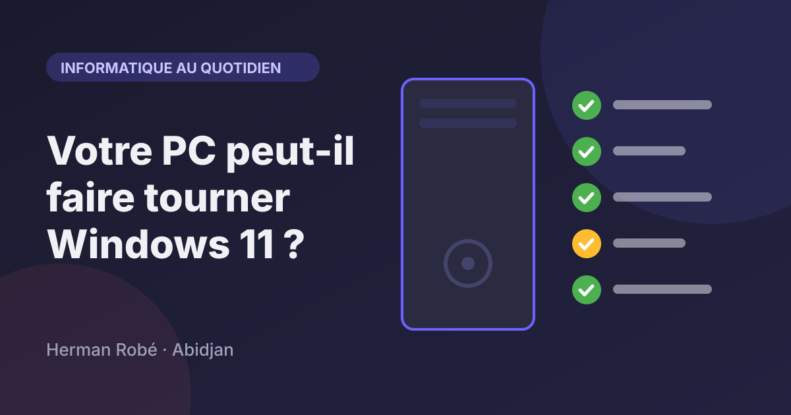
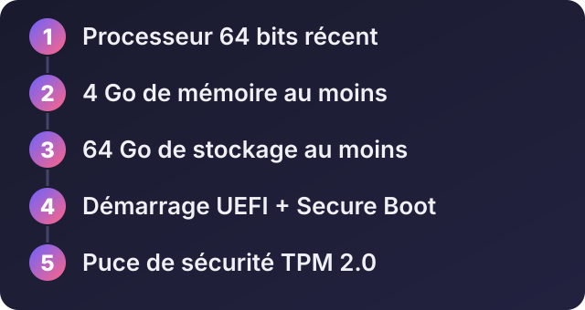
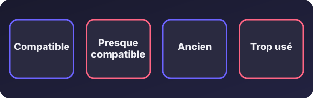

Accueil / Blog / Informatique au quotidien
Informatique au quotidienMon PC peut-il faire tourner Windows 11 ? Que faire sinon (et pour les machines peu puissantes)

Écouter cet article · environ 5 min
Windows 11 n'est pas installable sur tous les ordinateurs, même sur certains assez récents. C'est une question que les gens se posent surtout quand leur machine devient lente ou que leur système n'est plus à jour. Voici comment savoir si le vôtre est compatible, et quoi faire si ce n'est pas le cas.
Ce que demande Windows 11
D'après Microsoft, il faut en gros :
- un processeur 64 bits compatible, assez récent (Microsoft publie la liste des modèles pris en charge) ;
- 4 Go de mémoire (RAM) au minimum ;
- 64 Go de stockage au minimum ;
- un démarrage en mode UEFI avec Secure Boot (démarrage sécurisé) ;
- une puce de sécurité TPM 2.0 ;
- une carte graphique compatible.
Ces exigences peuvent évoluer : vérifiez toujours sur le site de Microsoft avant de décider.

Comment vérifier votre ordinateur
- Avec l'outil de Microsoft. Dans Windows, cherchez l'application « Contrôle d'intégrité du PC » (PC Health Check). Elle dit si votre machine est compatible, et pourquoi sinon.
- Processeur et mémoire. Dans *Paramètres > Système > À propos*, vous voyez le processeur et la mémoire installée.
- Puce TPM. Appuyez sur les touches Windows et R, tapez
tpm.msc, puis validez : la fenêtre indique si une puce TPM est présente et sa version. - Démarrage sécurisé. Même démarche avec
msinfo32: cherchez la ligne qui parle du démarrage sécurisé.
Parfois, une machine est presque compatible : le TPM ou le démarrage sécurisé existent, mais sont désactivés dans les réglages de démarrage (le BIOS). Les activer règle alors le problème. C'est une opération délicate : faites-vous aider si vous n'êtes pas à l'aise.
Que faire selon l'âge de la machine

Compatible : passez à Windows 11
Sauvegardez vos fichiers, puis suivez la mise à jour proposée par Windows ou le guide d'installation (voir l'article sur l'installation de Windows).
Presque compatible : améliorez la machine
- Ajouter de la mémoire si les emplacements le permettent.
- Remplacer le disque dur par un SSD : c'est souvent l'amélioration qui change le plus la vitesse d'un ordinateur ancien.
- Activer le TPM et le démarrage sécurisé dans les réglages de démarrage, si la machine les possède.
Ancien : un système plus léger
Si l'ordinateur ne peut pas faire tourner Windows 11, il peut encore servir avec un système adapté :
- ChromeOS Flex, de Google, transforme un vieux PC en ordinateur proche d'un Chromebook, tourné vers le navigateur. D'après la page de Google, il faut un processeur Intel ou AMD 64 bits, 4 Go de mémoire et 16 Go de stockage. Google déconseille les processeurs de 2012 ou plus anciens, et ne garantit pas le fonctionnement hors des modèles certifiés.
- Linux léger : Linux Mint Xfce, Xubuntu, Lubuntu, MX Linux ou antiX sont conçus pour les machines modestes. Ils conviennent pour la navigation, les documents, la messagerie et la vidéo. Les exigences exactes changent d'une version à l'autre : consultez la page de la distribution avant de choisir.
Avec peu de mémoire (2 Go ou moins), restez sur un usage simple : un navigateur léger, peu d'onglets, des documents. Une machine très ancienne ne fera pas de miracles, mais elle peut encore rendre service pour la bureautique de base.
Trop usé : remplacez
Si l'ordinateur est très lent, que le disque est abîmé et qu'aucune amélioration ne vaut le coût, le remplacer est souvent plus économique. Un ordinateur reconditionné récent est une bonne option : vérifiez qu'il est compatible Windows 11 avant l'achat.
Et si je reste sur Windows 10 ?
Microsoft a mis fin au support habituel de Windows 10 le 14 octobre 2025. Un programme de mises à jour de sécurité étendues a été proposé pour une durée limitée, mais ses conditions et ses dates ont changé : vérifiez la situation actuelle sur le site de Microsoft. Sans ce programme, l'ordinateur ne reçoit plus de correctifs, ce qui devient risqué dès qu'il est connecté à Internet. Ce n'est pas une solution à long terme.
Forcer l'installation de Windows 11 : à éviter
Des astuces circulent pour installer Windows 11 sur une machine non compatible. Microsoft ne garantit pas le bon fonctionnement dans ce cas, et la machine peut manquer de mises à jour. Pour un ordinateur de travail, ce n'est pas un bon choix.
Quand demander de l'aide
Si vous ne savez pas si votre machine est compatible, si vous hésitez entre améliorer, changer de système ou remplacer, ou si vous avez plusieurs ordinateurs à traiter dans votre entreprise, un avis d'expert vous fait économiser du temps et de l'argent.
Envoyez-moi le modèle et les caractéristiques de votre ordinateur sur WhatsApp : je vous dis ce qui est possible, et ce que je vous conseille.